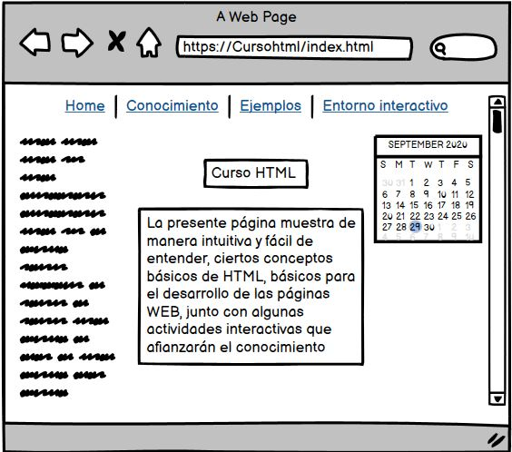
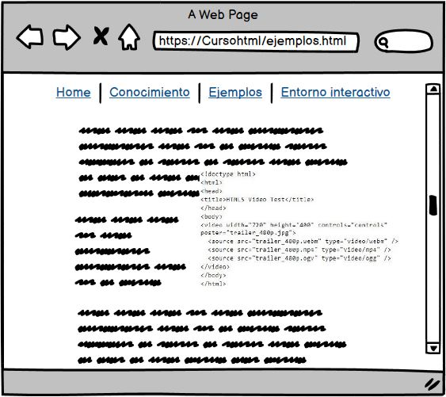
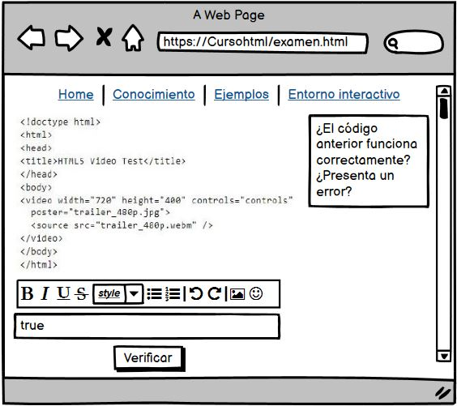

ESTRUCTURA BASICA DE HTML5
Objetivo del sitio
Objetivo general
Plantear una herramienta virtual que permita enseñar ciertas caracteristicas de HTML5
Objetivos específico
Consolidar la teoría requerida en la OVI
Desarrollar por medio de un software especializado la posible interfaz de la aplicación a desarrollar
Consolidar por medio de una página HTML los planteaminetos de la aplicación
Materiales
Los materiales usados para el desarrollo de esta actividad será una interfáz de desarrollo que permita la programación de páginas web como lo es sublime text junto con XAMMP en el instante en el que se tenga una proyecto definido.
Para la etapa de diseño, se hará uso de Balsamiq Mockups, aplicación la cual permitirá darle una apariencia gráfica preliminar de los que se desea plantear en la OVI
Caracteristicas principales de la OVI
Section
se utiliza para representar una sección "general" dentro de un documento o aplicación, como un capítulo de un libro. Puede contener subsecciones y si lo acompañamos de h1-h6 podemos estructurar mejor toda la página creando jerarquías del contenido, algo muy favorable para el buen posicionamiento web
Footer
El elemento de pie de página se usa para indicar cosas como el nombre del autor, la información de contacto y la patente de derechos de autor, por mencionar algunos. Un pie de página permite al programador dar una idea general sobre el sitio web. Sin embargo, los pies de página se pueden utilizar más de una vez en un documento. Un artículo puede tener su propio pie de página independiente además de otro elemento de pie de página en el código fuente de una página web específica. Completa la información en el documento y lo hace más significativo.
Article
A menudo nos encontramos con contenido independiente en una página web. Hay entradas de blog, publicaciones en foros y comentarios de usuarios, por mencionar algunos. El elemento artículo se utiliza para este tipo de datos donde el contenido es independiente de su entorno. Es una buena práctica incluir encabezados, pies de página y títulos dentro de las etiquetas del artículo.
También podemos usar el elemento de sección entre las etiquetas de artículo.
Aside
El contenido de un elemento secundario está ligeramente relacionado con el contenido externo. Se puede utilizar dentro de un elemento de artículo en los casos en que el contenido sea relevante para el contenido del elemento de artículo. Aunque el contenido del elemento aparte es independiente por naturaleza, puede proporcionar información adicional sobre el contenido que lo rodea.
Interfaz gráfica
Pestaña por defecto
Pestaña de conocimiento

ejemplos
Pestaña de preguntas
